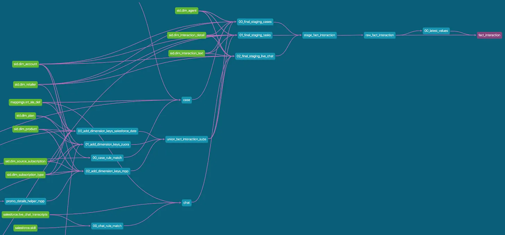

Three raw tables sit in DuckDB — landed by scripts/ingest_raw.py. Time to write the thing dbt actually exists for: a model.
To keep this first one focused, we’ll skip every advanced concept (sources, {{ source(...) }}, materialization config) and just build the simplest model that works. The next exercise (add_sources) re-does the same model the production way.

A dbt model is a single .sql file under models/ that contains exactly one SELECT statement. No CREATE TABLE, no INSERT, no DDL of any kind — you write the query, dbt wraps it in the right DDL and runs it for you. If the view already exists, dbt drops and rebuilds it.
-- models/staging/stg__customers.sql
select
id as customer_id,
first_name,
last_name
from main.raw_customers
That’s the entire file. Three columns, a rename, no Jinja. main.raw_customers is the literal DuckDB table that scripts/ingest_raw.py wrote.
Hardcoding the schema and table name like this is something you almost never do in real dbt code — production models always go through
{{ source(...) }}or{{ ref(...) }}. We’re using the hardcode here on purpose, to keep the cognitive load on this very first model at zero. The add_sources exercise (next) refactors it.
dbt run actually doesWhen you run dbt run --select stg__customers, dbt walks the same loop it walks for every model:
models/ and builds an in-memory representation of the project.{{ source(...) }}, {{ ref(...) }}, {{ config(...) }}, macros) into raw SQL. Writes the compiled SQL to target/compiled/. Does not touch the warehouse.CREATE OR REPLACE VIEW, by default) and runs it against the warehouse.target/.So your stg__customers.sql ends up running as something like:
create or replace view dev.main_main.stg__customers as (
select
id as customer_id,
first_name,
last_name
from main.raw_customers
);
(dev is the DuckDB database file database/dev.duckdb; main_main is the schema dbt creates for its own models.)
You write the logic; dbt handles the boilerplate, the dependency order, the schema names, and the cleanup.
Two places worth peeking at after a run:
dbt_project/target/compiled/dbt_project/models/staging/stg__customers.sql — the SQL dbt actually sent to DuckDB. For this hardcoded model it’s identical to your input; once you start using source() and ref() it diverges.dbt_project/target/run_results.json — structured output of the last run: which nodes succeeded, how long they took, any error messages.And of course the warehouse itself:
duckdb database/dev.duckdb -c "SELECT * FROM stg__customers LIMIT 3;"
| Command | What it does |
|---|---|
dbt compile |
Parses + compiles. Does not touch the warehouse. Useful when you want to see what dbt is about to send before sending it. |
dbt run |
Parses + compiles + executes against the warehouse. |
When a model misbehaves, dbt compile + reading the file in target/compiled/ is the fastest way to see what dbt is actually about to run.
main.raw_customers only exists if you ran scripts/ingest_raw.py. If you see “Relation does not exist”, go back one step.{{ source(...) }} too early. — Save it for the next exercise. Without a matching _sources.yml declaration, the macro errors out.CREATE TABLE in a model. — You’re fighting the framework. dbt owns DDL; you own the SELECT.Press n to start the exercise.